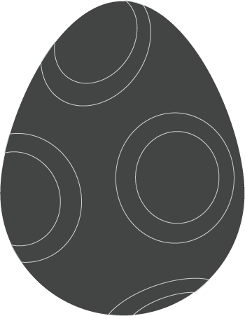
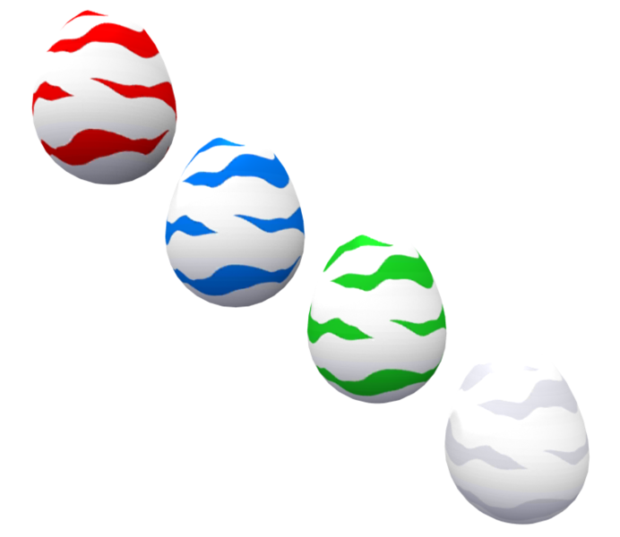

Los Digimon son las manifestaciones fisicas de los datos que actuan como criaturas vivas, y estan formados por datos fragmentados procedentes de la red de ordenadores del mundo real despues de que un virus lanzado por un hacker empezase a absorber informacion, evolucionando y cambiando.
  Los Digimon nacen de un Digitama (Digi-Huevo), y eventualmente crecen durante un proceso conocido como Digievolucion, en el cual sufren una serie de cambios fisicos, y en el mayor de los casos, un incremento en sus poderes. Algunos Digimon actuan de forma bestial, guiados por sus instintos salvajes, mientras que otros poseen inteligencia, sentimientos y personalidad humana.
los Digimon absorben los datos de los Digimon que derrotan o matan, Esto es necesario en la vida de los Digimon, sobre todo despues de que llegan a la etapa adulta, pues es necesario consumir grandes cantidades de energia, para seguir viviendo. Este proceso es parecido al proceso alimenticio de los humanos. Si un Digimon no consume suficiente energia o si pierde esta energia por causa de heridas o exceso de gasto en una batalla, tiene la posibilidad de perder su Digievolucion y regresar a un estado anterior, y en el peor de los casos morir y renacer como un Digitama
El ciclo de vida de un Digimon es casi siempre el mismo: nacen de un Digitama, evolucionan y eventualmente mueren, desintegrandose en fragmentos infinitesimales de informacion.
La muerte de un Digimon puede ser por muerte natural, o por muerte en batalla en caso que no sean destruidos sus datos o absorbidos estos pueden revivir. La muerte natural ocurre cuando el Digicore es inestable por el proceso de su evolucion. Cuando la muerte de un digimon ocurre ya sea por batalla o diginucleos inestables si esto ocurre, un Digimon crea una copia de sus datos (como recuerdos y demas) y la deposita en un Digitama y de esta forma renace. Pero si el Digimon muere antes de terminar su proceso. Sus datos son esparcido y enviados a la Dark Area (Zona de la Oscuridad), donde Anubimon, el juez de los muertos, juzga sus acciones en vida. Si el Digimon fue bueno, Anubimon lo resucita en el Pueblo del Inicio como un Digitama. Al ser resucitado de esta manera, el Digimon pierde todos sus recuerdos y experiencia de su vida anterior. Si el Digimon, en cambio, ha sido malvado, Anubimon lo condena al Dark Area. Existen otros Digimon ademas de Anubimon, que pueden resucitar a los Digimon muertos en Digitamas.
La reproduccion de un Digimon es de forma asexual. Un Digimon de la etapa madura en adelante esta capacitado para crear un Digitama con una parte de sus datos y asi, dar a luz a un descendiente